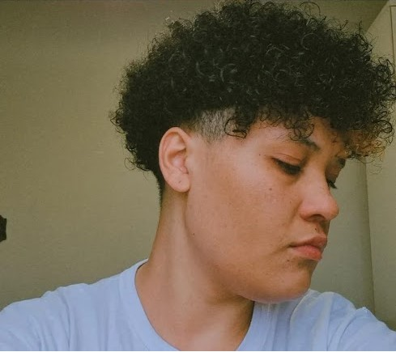

Nome: Catarine Gonçalves
Data de Nascimento: 19/05/1996
Local: São Paulo - SP
Faculdade: Ciência da Computação
Atualmente, estou direcionando minha carreira para me tornar um Tech Lead na área de programação front-end. Tenho um histórico sólido como desenvolvedor front-end, trabalhando com JavaScript e jQuery em projetos variados. Meu interesse em frameworks modernos como React.js, Vue.js e Angular demonstra meu compromisso em estar sempre atualizado com as melhores práticas e tecnologias emergentes. Sou uma pessoa criativa e inovadora, motivada pela resolução de problemas complexos e pela criação de experiências de usuário excepcionais. Minha abordagem autodidata me permite explorar novos conceitos e aprimorar minhas habilidades continuamente, sem limitações para meu aprendizado.
⏵ Sou turismóloga
⏵ Sou mestre de RPG de Mesa
⏵ Faço cosplay de Homem Aranha
⏵ Rata de Academia
⏵ Entusiasta da Programação
⏵ Streaming na Twitch, segue lá!
⏵ Fã de Anime
⏵ Terror dos Rodízios
⏵ Já ganhei medalhas em competição de natação
Minha motivação para participar da comunidade Código Certo Coders está fundamentada na busca contínua por aprimoramento profissional e crescimento na área de tecnologia. A oportunidade de aprender através de projetos práticos, aliado à mentoria especializada, é exatamente o que procuro para expandir minhas habilidades como desenvolvedora front-end. A flexibilidade de horários e o acesso gratuito são diferenciais que tornam o programa ainda mais atraente, permitindo-me equilibrar essa experiência com outras responsabilidades. Além disso, estou entusiasmada com as oportunidades de networking e aprendizado em metodologias ágeis, que são essenciais para meu objetivo de me tornar uma Tech Lead.